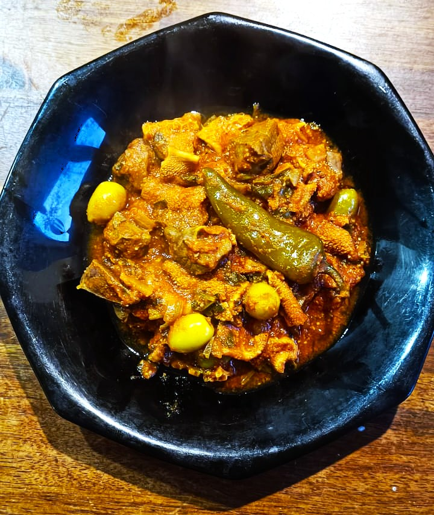
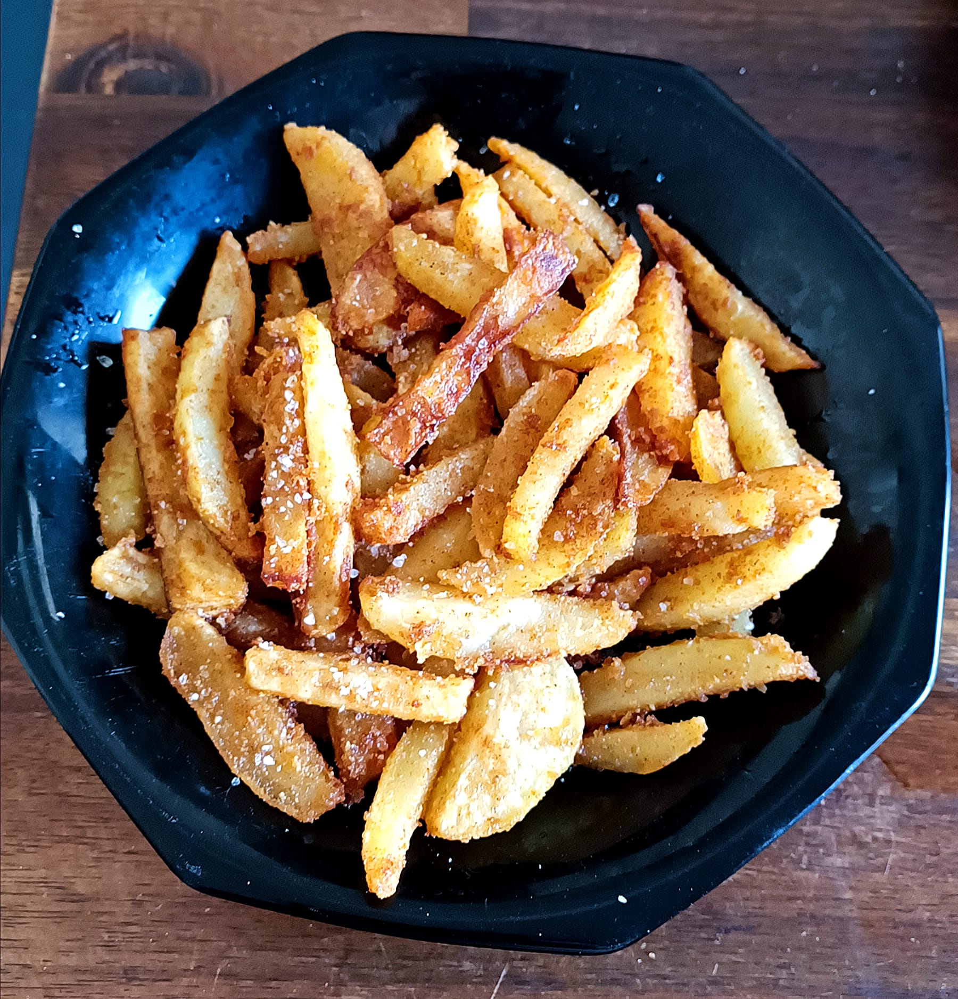

Douwara

Ingrédients
- 1 Gros ognion
- 2 tomates mixées
- 500 grammes tripes/poumon/foie
- 500 ml eau chaude
- 80 grammes d'olive
- 1 cuillere a soupe de concentré de tomate
- 1/2 citron confi
- 1 piment
- Persil / Corriandre
- Epices: Sel, Poivre, Ail, Cumin, Paprika, Gingembre, Curcuma
Préparation
- Dans une cocotte faire sué un gros ognion emincé et les tripes
- Ajouté les épices listées
- Une fois bien pris, ajouté 500 ml eau chaude et fermer la cocotte pour 20 min
- Une fois les 20 minutes passées. Ajouté tomate mixé, olives, tomate concentré, 1/2 citron confi, persil/coriandre, piment
- Fermer la cocotte pour 15 minutes
- Apres 15 minutes, servir dans un plat avec une boisson faiche
Frites aux épices

Ingrédients
- 5 petites pomme de terre ou 2 grande
- Epices: Sel, Poivre, Ail en poudre, Paprika
- Maizena
- Huile à frire
Préparation
- Laver les pommes de terre et les couper en cube ou en long
- Preparer un melange de maizena avec les epices
- Secher les pommes terre puis plonger les dans le mélange
- Apres 20min, faire frire le melange